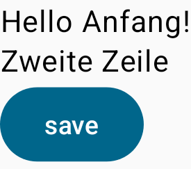
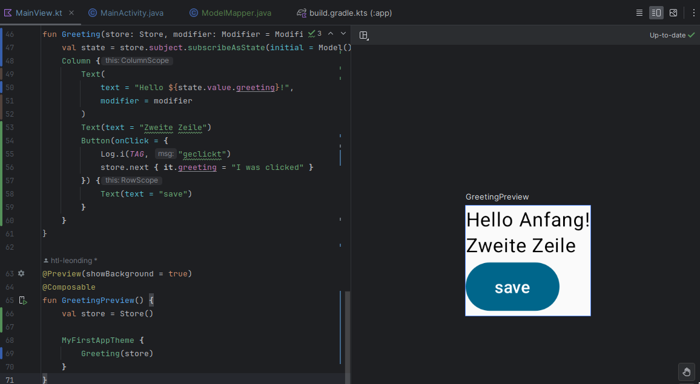

1. 2023-09-18
1.1. Intro microprofile
| Name | Thema |
|---|---|
Aichinger Tobias |
Elektrohandel |
Al Desoky Abdullah |
Fitness-Ratgeber |
Balazs Bálint |
Kochrezept |
Berg Bajtik |
Schwimmwettkampf |
Breinesberger Markus |
Friedhofsverwaltung |
Cao Anton |
Restaurant |
Cvijić Luka |
Autohändler |
Daxinger Oliver |
Dienstplan für Straßenmeisterei |
Fröller Felix |
Autoverleih |
Gruber Moritz |
Tennisverein |
Ilming Winnie |
Bilbliothek |
Lehner David |
Bauernhof (Planung der Felder, Was wird angebaut) |
Mali Laurent |
Fussballverein |
Nestler Linus |
Zoo |
Nikolaus Alexander |
Christkindl-Vw |
Nurceski Said |
Kino |
Salkovic Armin |
Reisebusunternehmen |
Schludermann Julian |
Zug (Welche Linien, Fahrplan) |
Schnalzenberger Arwed |
Gärtnerei |
Seifried Erik |
Fussball-Liga (welches Team spielt gegen welches mit Mannschaften mit sämtlichen Ereignissen während eines Spiels) |
Sonnleitner Lukas |
Fahrschule |
-
Application Server
-
Web-Server für Java Applikationen
-
Mit einem Java Application Server können Java Programme "ins Internet gebracht werden"
-
Bsp: Glassfish (Referenzimplementierung), Payara, Wildfly, …
-
2. 2023-09-25 REST-Service
| Internet für Prozesse und Maschinen |
2.1. REST-clients
-
Browser (für GET)
-
Browser-Plugins (für GET, POST, DELETE, PUT, PATCH, …)
-
Programme wie Postman, Insomnia, …
-
REST-Client in der IDE
-
Test-Apis wie RestAssured, Karate,…
-
CLI-clients wir curl, httpie, …
-
…
2.1.1. Verschiedene Ausgaben für identes GET möglich
-
durch Angabe eines unterschiedlichen MediaTypes
2.1.2. ConfigProperty
-
Variablen können auf verschiedene Arten einen Wert erhalten
2.1.3. Quarkus REST Projekt
-
File → new → Project… → Fill all the fields and choose → Click "Next" → Choose "RESTEasy Reactive" & "RESTEasy Reactive Jackson"
Konfigurationen
-
Als nächstes klickt auf "load as maven project" in der rechten unteren Ecke oder macht einen Rechtsklick auf das "pom.xml" File → "Maven" → "Reload project"
-
Gebt dieses Kommando in das Terminal in eurem Projekt-folder ein, um das Programm zu starten:
./mvnw clean quarkus:dev-
Wenn es Probleme mit der JAVA_HOME Environment-Variable gibt, versucht es einmal mithilfe dieser Links zu lösen:
-
Nun kann man einen "http-requests" folder mit einem "requests.http" File erstellen und in diesem schreibt man eine GET-Request, um den Output unserer Applikation zu testen:
GET http://localhost:8080/hello
####Man kann auch in der rechten oberen Ecke auf "Examples" klicken und dann weiters auf "Get Requests", um sich mehr Beispiele von http-Requests ansehen zu können.
"Examples"-location
-
Öffnet nun das "ExampleResource.java" File und benennt die Klasse neu.
@Path("/hello")
public class GreetingResource {
@ConfigProperty(name="test", defaultValue = "hello")
String test;
@GET
@Produces(MediaType.TEXT_PLAIN)
public String hello() {
return String.format("%s 4bhif", test);
}
@GET
@Produces(MediaType.TEXT_HTML)
public String hello1() {
return String.format("<h1>%s 4bhif", test);
}
}-
Nun kann man wieder den Output mithilfe unseres "requests.http" File testen:
GET http://localhost:8080/hello
Accept: text/plain (1)
####
GET http://localhost:8080/hello
Accept: text/html (2)
####| 1 | Durch "Accept" wird nur diese Form an Daten angenommen. Hier ist es nur normaler Text |
| 2 | Dieser Get-Request nimmt nur normalen html Code an. |
Der Typ der Daten wird im Code durch das "@Produces(MediaType" festgelegt.
-
Man kann auch mehrere Files erstellen, um den Wert von Variablen festzulegen.
-
One can also create several files to define variables like the "text" variable from above in the "GreetingResource.java" File
-
Mehr Informationen dazu gibt es oben bei dem Kapitel über "ConfigProperty"
-
-
Quarkus Tests:
./mvnw clean quarkus:test@QuarkusTest
public class GreetingResourceTest {
@Test
public void testHelloEndpoint() {
given()
.when().get("/hello")
.then()
.statusCode(200)
.body(is("servus 4bhif"));
}
}Für unsere Tests werden wir im laufe des Jahres die rest-assured" und die "assertj" Bibliotheken verwenden.
2.2. HÜ
-
Für eine Klasse (Stammdaten) einen Rest-Endpoint erstellen mit CRUD-Funktionalität, der die Daten in einer List speichert.
3. 2023-10-02 REST - Resources and caching
Cashing Explanation
Cashing
-
Es gibt Server und Clients
-
Jedes mal, wenn ein Client etwas benötigt, setzt er einen Request an den Server ab
-
Da kann schon was zusammen kommen
Browser
-
HTTP1.1 sagt: Jeder Browser darf nur maximal 2 Connections pro Webpage offen haben
-
Chrome hat ein Limit von 6 pro remote- site und 10 über den gesamten Browser
-
Wenn man da auf viele kleine Antworten wartet, dann kann das zu Verstopfungen führen
Lösung
-
Ich (der Client) hole mir nicht immer das allerneueste Objekt vom Backend, sondern gebe mich mit einem etwas älteren zufrieden. (→ weniger Requests)
-
Der Server schickt nur ein neues Objekt, falls sich die Antwort seit der letzten Anfrage geändert hat (sonst nicht)
-
Geht natürlich nur bei GET Requests
3.1. Expires
3.1.1. Feld im HTTP-Header
-
Ich biete als Server eine Resource an
-
Wenn ich eine Response schicke, hänge ich ein Header-Feld an
-
Der Client weiß jetzt, dass er vor diesem Timestamp nicht nochmal fragen braucht
-
Der Client gibt in diesem Fall dem Programmierer die 'alte' Antwort (passiert in Clients automatisch)
-
Ansonsten holt sich der Client eine neue Resource ab (mit neuem expires-Feld)
3.1.2. Expires
-
Eingestellt am Server
-
Muss sich mal wer überlegen
-
Kann sich auch ändern
-
-
Passiert dann eigentlich im Client
-
Ist für den Entwickler 'transparent'
-
Der Entwickler macht einen einen Request, der Client merkt sich die Antworten per Resource (URL)
-
Spart die komplette Übertragung des Requests und des Responses
3.1.3. Beispiel:
3.2. E-Tag Hashing
3.2.1. E-Tag
-
Ich biete am Server eine Resource an
-
Wenn ich eine Resource schicke, hänge ich einen Hash-Wert an, der eindeutig ist für diese 'Version' der Antwort
-
Wenn ein Client die Resource anfragt, schickt er den Hash-Wert mit
-
Am Server: Wenn der Hash-Wert der Antwort sich mit dem mitgeschickten Hash-Wert deckt, dann schicke ich einfach den HTTP-Status-Code: 304 - Not Modified
-
Spart eigentlich 'nur' die Rückübertragung der Daten im body des Responses (wenn es sich nicht verändert hat)
Beispiel:
3.3. HTTP status ranges in a nutshell
4. 2023-10-09
4.1. k8s
4.2. Beziehungen in Klassendiagrammen
| Beziehungen | Beschreibung | Beispiel |
|---|---|---|
Assoziation |
benutzt-Beziehung |
Hansi hat einen Hund Flocki |
Komposition |
besteht-aus Beziehung; Merkmal: Gesamtes Objekt wird zerstört bei Zerlegung |
Haus besteht aus Etagen |
Aggregation |
besteht-aus Beziehung; Merkmal: Objekt wird bei Zerlegung NICHT zerstört |
Auto hat Autoreifen |
Vererbung |
is-a Vererbungsbeziehung |
Ein Hund erbt vom Säugetier |
-
Was sind Stamm- und Bewegungsdaten:
-
auch Master-Data und Transaction-Data genannt
-
Stammdaten sind auch mehrere Perioden gültig zB Personen, Produkte, Kategorien, …
-
Bewegungsdaten sind meist nur eine Periode (zB Geschäftsjahr) gültig
-
zB Rechnungen, Bestellungen
-
man erkennt Bewegungsdaten an einem Datum zB Rechnungsdatum, Bestelldatum
-
Das Geburtsdatum bei Personen zählt nicht
-
Bewegungsdaten sind meist zwischen Stammdaten angesiedelt
-
-
Im obigen Beispiel sind Person und Abteilung die Stammdaten, die Arbeitszeit ist die Klasse der Bewegungsdaten.
5. 2023-10-16
5.1. CLD vs ERD
5.1.1. CLD
5.1.2. ERD
5.2. JSON-Binding
-
Java-Objekte werden in json konvertiert
-
java-object zu json: marshalling
-
json zu java-object: unmarshalling
-
-
Libraries für JSON und XML
-
JSON-B, Jackson → JSON
-
JAXB → XML
-
| bei den Entitäten @XMLRootElement hinzufügen |
import javax.xml.bind.annotation.XmlRootElement;
@XmlRootElement
public class Vehicle {
}5.3. JsonObject
-
eigenes JsonObject erstellen:
public class GreetingResource{
@GET
@Path("myJson")
@Produces(MediaType.APPLICATION_JSON)
public JsonObject myCustomJsonObject(){
JsonObject myObject = Json.createObjectBuilder()
.add("first-name", "Max")
.add("last-name","Mustermann")
.build();
return myObject;
}
}
GET http://localhost:8080/vehicle/myJson
Accept: application/json5.4. Response
-
eigene Response erstellen:
public class GreetingResource{
@GET
@Path("myresponse")
@Produces(MediaType.APPLICATION_JSON)
public Response myCustomResponse() {
return Response.ok(new Vehicle("Opel", "Karl")
)
.header("MY_HEADER", "java is cool")
.build();
}
}
GET http://localhost:8080/vehicle/myresponse
Accept: application/json

5.6. Servlet
-
Als Jakarta Servlet (früher Java Servlet) bezeichnet man Java-Klassen, deren Instanzen innerhalb eines Webservers Anfragen von Clients entgegennehmen und beantworten. Der Inhalt der Antworten kann dabei dynamisch, also im Moment der Anfrage, erstellt werden und muss nicht bereits statisch (etwa in Form einer HTML-Seite) für den Webserver verfügbar sein.Als Jakarta Servlet (früher Java Servlet) bezeichnet man Java-Klassen, deren Instanzen innerhalb eines Webservers Anfragen von Clients entgegennehmen und beantworten. Der Inhalt der Antworten kann dabei dynamisch, also im Moment der Anfrage, erstellt werden und muss nicht bereits statisch (etwa in Form einer HTML-Seite) für den Webserver verfügbar sein. wikipedia
-
mit einem Pfad wird es aktiviert
5.7. Übung Mikroprojekt
-
Tag "JsonObject"
-
Erstellen Sie einen Endpoint, der ein Array (jakarta.json.JsonArray) von Json-Objekten (jakarta.json.JsonObject) zurückgibt, passend zu Ihrer Themenstellung
-
Lesen Sie diese Objekte vorher aus einer Datei ein.
-
Erstellen Sie weiters dazugehörige rest-assured-Integrations-Tests
-
-
Termin: 21.10.2023 20:00
6. 2023-10-23
6.1. JPA
-
Zustände eines Objekts
6.2. DevServices
-
Damit sich der Docker Container der DevServices nicht bei jedem Programmstart neu startet, kann folgende Datei erstellt werden:
~/.testcontainers.propertiestestcontainers.reuse.enable=true
7. Feedback Miniprojekt
-
siehe Aichinger
-
Dependency Injection vs. Singleton Pattern
-
-
Offene Fragen
-
Separation of concerns
-
siehe Ken Fogel, Transitioning to Java-Kickstart your polyglot programming journey by getting a clear understanding of Java, packt, 2023
-
https://dev.to/tamerlang/separation-of-concerns-the-simple-way-4jp2
-
-
Lambda-Expressions?
-
Dependency Injection
-
Warum gibt es so viele verschiedene Arten von Repos (git, Persistierung, …)
-
8. 2023-11-06
8.1. pom.xml
8.2. REST-Client
8.3. JPA
9. Übung JPA
-
In einem eigenen Verzeichnis
backend-jpaim microproject - Repository-
Die Entitäten des Mikroprojekts kopieren
-
Die Entitäten mit JPA-Annotationen versehen
-
Geeignete Repositories erstellen
-
Eine lokale DerbyDb verwenden (ohne Docker)
-
Mehrere Abfragen erstellen (zB entprechend den User Stories)
-
-
In Integrationstests diese Abfragen mit assertj-core und assertj-db abtesten.
-
Zusätzlich eine Vererbungsbeziehung erstellen (eine Basisklasse, zwei Subklassen) [Haben wir noch nicht besprochen, daher noch nicht notwendig]
10. 2023-11-06
10.1. Dependencies in Quarkus
-
Resteasy
-
REST-Endpunkt (Server)
-
-
Jackson
-
JSON - Writer/Reader
-
-
JAXB
-
XML - Writer/Reader
-
-
Arc
-
Bibliothek für das objektrelationale Mapping mit Hibernate (JPA)
-
-
PostgreSQL
-
JDBC-Treiber
-
10.2. Quarkus-Parameter
-
PathParam
-
QueryParam
-
FormParam
Mehr dazu hier
10.2.1. Query Parameter
@Path("/extensions")
@RegisterRestClient
public interface ExtensionsService {
@GET
Set<Extension> getById(@QueryParam("id") String id);
}10.2.2. Mapping
@Path("/extensions")
@RegisterRestClient(configKey = "extensions-api")
public interface ExtensionsService {
@GET
Set<Extension> getById(@QueryParam("id") Integer id);
@GET
Set<Extension> getByName(@RestQuery String name);
@GET
Set<Extension> getByFilter(@RestQuery Map<String, String> filter);
@GET
Set<Extension> getByFilters(@RestQuery MultivaluedMap<String, String> filters);
}10.3. JSON-Properties (für Jackson)
class Person {
@JsonProperty("first_name")
public String firstName;
@JsonProperty("last_name")
public String lastName;
}10.4. POST mit URI
class PersonResource {
@POST
@Consumes(MediaType.APPLICATION_JSON)
@Produces(MediaType.APPLICATION_JSON)
public Response addPerson(Person person, @Context URI uriInfo) {
personRepository.add(person);
URI uri = uriInfo
.getAbsolutePathBuilder()
.path("42")
.build();
return Response
.created(uri)
.build();
}
}10.5. EntityManager
Der EntityManager in Java ist eine Schlüsselkomponente der Java Persistence API (JPA), die dazu dient, Datenbank-Entitäten zu verwalten, erstellen, aktualisieren und löschen.
Um den EntityManager in einem Repository zu verwenden, muss man ihn wie folgt einbinden:
import jakarta.enterprise.context.ApplicationScoped;
import jakarta.inject.Inject;
import jakarta.persistence.EntityManager;
@ApplicationScoped
class Repository {
@Inject
EntityManager em;
}11. 2023-11-13
Zustände eines Objekts:

12. 2023-11-13
12.1. Arten von REST-Parameter
-
Path-Parameter
GET https://example.com/users/104
-
Query-Parameter
GET https://example.com/users?size=10&offset=20
12.2. Versioning
-
Semantic Versioning (SemVer)
-
Format: Hauptversion.Nebenversion.Patch (z.B., 1.2.3)
-
1. Stelle: Hauptversion (Major) für große Änderungen
-
2. Stelle: Nebenversion (Minor) für neue, abwärtskompatible Funktionen
-
3. Stelle: Patch für abwärtskompatible Fehlerbehebungen
-
Vorabversionen und Build-Informationen sind optional (z.B., 1.2.3-alpha+001)
-
-
Calendar Versioning (CalVer)
-
verwendet ein datumsbasiertes Versionsformat
-
Format: YYYY.MM.DD (z.B., 2023.01.15)
-
spiegelt das Veröffentlichungsdatum wider, um die Chronologie anzuzeigen
-
enthält keine Informationen über die Art der Änderungen
-
Konzentriert sich darauf, wann die Veröffentlichung erfolgt, anstatt den Typ der Änderungen anzugeben
-
12.3. Vererbung in Datenbanken darstellen
Als Beispiel ist eine Vererbung mit den Klassen PKW und LKW gegeben, die von der abstrakten Basisklasse Fahrzeug erben.
Um dieses Datenmodell in die Datenbank zu übertragen, gibt es im Grunde 2 Möglichkeiten.
Möglichkeit 1: Table per Class → für alle Unterklassen eine eigene Tabelle
| PKW |
|---|
Leistung |
Passagiere |
| LKW |
|---|
Leistung |
Achsen |
Implementierung in Quarkus:
@Inheritance(strategy=InheritanceType.TABLE_PER_CLASS)
public class PKW {
// ...
}Möglichkeit 2: Single Table → eine Tablle für die Basisklasse, wo auch die Attribute der Unterklassen enthalten sind
| Fahrzeug |
|---|
Leistung |
Passagiere |
Achsen |
Delimiter |
Implementierung in Quarkus:
@Inheritance(strategy=InheritanceType.SINGLE_TABLE)
public class Fahrzeug {
// ...
}13. 2023-11-20
Möglichkeit 3: JOINED → Attribute der Basisklasse in einer Tabelle und je eine Tabelle pro abgeleiteter Klasse (mit Diskriminator* DTYPE)
*Diskriminator = Unterscheidungsmerkmal
@Inheritance(strategy=InheritanceType.JOINED)
public abstract class Kfz {
// ...
}13.1. Panache
-
Hibernate ORM, am meisten verbreitetste JPA Implementierung
-
Erlaubt detailliert konfigurierbares und komplexes OR-Mapping
-
Jedoch nicht wirklich einfach zu verwenden weil ziemlich trivial
Konfiguration der Data-Source (application.properties):
# configure your datasource
quarkus.datasource.db-kind = derby
quarkus.datasource.username = app
quarkus.datasource.password = app
quarkus.datasource.jdbc.url = jdbc:derby://localhost:1527/myDB;create=true
# drop and create the database at startup (use `update` to only update the schema)
quarkus.hibernate-orm.database.generation = drop-and-createEntity-Klasse:
@Entity
public class Person {
@Id
private Long svnr;
private String firstname;
private String lastname;
public Person() {}
public Person(Long svnr, String firstname, String lastname) {
this.svnr = svnr;
this.firstname = firstname;
this.lastname = lastname;
}
// Getter und Setter
}Zugriff über EntityManager:
@Path("/person")
public class ExampleResource {
@Inject
EntityManager em;
@GET
@Produces(MediaType.APPLICATION_JSON)
public Person getPerson() {
return em.find(Person.class, 1L);
}
@GET
@Path("init")
@Transactional
public String init() {
Person p = new Person(1L, "Max", "Muster");
em.persist(p);
return "init ok";
}
}Zugriff mittels klassischem JPA:
-
Nachteile
-
Felder private
-
generierte Getter und Setter machen unnötig viel Code
-
Methoden für Standard-Zugriffe werden immer wieder neu implementiert (zB Count, …)
-
→ Panache macht das einfacher
2 Patterns:
-
Active-Record-Pattern
-
Objekte enthalten Daten und Verhalten
-
Felder sind public, keine Getter/Setter notwendig
-
Getter/Setter optional für Validierungen, Umwandlungen → werden auch bei Feldzugriff automatisch verwendet
-
-
Repository-Pattern
-
klassische Entity-Klasse erstellen, je nach Bedarf:
-
klassische JPA-Entities oder
-
Extend PanacheEntityBase (keine Getter/Setter) oder
-
Extend PanacheEntity (default ID)
-
-
14. 2023-11-21
Autor: Moritz Gruber
14.1. Query mit 300 000 Zeilen
-
paging: Ergebniszeilen werden in Seiten mit XX Zeilen aufgeteilt.-
offset: gibt an wie viele Elemente ausgelassen werden
-
limit: gibt an wie viele Elemente man ab dem offset bekommt
-
BSP:
-
1. Page hat Offset 0 und Limit 100
-
2. Page hat Offset 100 und Limit 100
-
-
-
stream: Man bekommt Ergebnisse Stück für Stück und nicht auf einmal. Somit kann man mit den bereits erhaltenen Daten gleich weiterarbeiten.
14.2. Count in einer Query
-
BSP: Zählen der Männer eines Unternehmens
--Richtig
SELECT count(*) FROM EMP WHERE lower(sex)='male';
--Falsch
SELECT * FROM emp;| Mit der Aggregatsfunktion count zählen und nicht im Code! |
14.3. Übung für WMC-Test
14.3.1. Setup Project
-
Dependencies in der pom.xml hinzufügen
-
quarkus-resteasy-reactive-jackson
-
quarkus-resteasy-reactive
-
quarkus-hibernate-orm
-
quarkus-jdbc-derby
-
quarkus-smallrye-openapi
-
assertj-core
-
assertj-db
-
-
download-derbydb-and-jdk.sh in das Repository kopieren und ausführen
chmod u+x download-derbydb-and-jdk.sh
./download-derbydb-and-jdk.sh-
Inhalt der
application.propertiesaus dem Projekt-Root soll in die /src/main/resources/application.properties kopiert werden -
derbydb-start.shausführen um die DB zu starten
./derbydb-start.sh-
datasource.txtöffnen und Inhalt kopieren mit STRG + A und STRG + C -
Neue Datasource mit
Import from Clipboarderstellen
14.3.2. Verzeichnisstruktur
-
main/java
-
at.htl.book.entity
-
Author
-
Book
-
-
at.htl.book.control
-
AuthorRepository
-
BookRepository
-
-
-
test/java
-
at.htl.book.entity
-
AuthorTest
-
BookTest
-
-
at.htl.book.control
-
AuthorRepositoryTest
-
BookRepositoryTest
-
-
14.3.3. Entity
@Entity
@Table(name = "LIB_AUTHOR") (1)
@NamedQueries({ (2)
@NamedQuery(
name = "Author.findAll",
query = "select a from Author a"
),
@NamedQuery(
name = "Author.findByFirstName",
query = "select a from Author a where a.firstName = :FIRSTNAME"
)
})
public class Author {
@Id
@GeneratedValue(strategy = GenerationType.IDENTITY) (3)
private Long id;
private String firstName;
private String lastName;
//constructors here
//getter and setter here
//toString() here
}| 1 | Hier wird der Name der Tabelle in der DB festgelegt |
| 2 | Hier werden Queries mit Namen definiert, welche später unter diesen Namen verwendet werden können |
| 3 | Wird zum Generieren der ID benötigt |
14.3.4. Repository
@ApplicationScoped (1)
public class AuthorRepository {
@Inject
EntityManager em; (2)
public Author save(Author author) {
return em.merge(author); (3)
}
}| 1 | Es wird nur eine Instanz von AuthorRepository für die Dauer der gesamten Anwendung erstellt |
| 2 | Der EntityManager vereinfacht die Persistierung von Java Objekten in einer relationalen DB |
| 3 | Merge persistiert ein Java Objekt, falls es noch nicht existiert, falls es jedoch existiert wird es in der DB aktualisiert |
14.3.5. RepositoryTest
@QuarkusTest (1)
class AuthorRepositoryTest {
@Inject
AuthorRepository authorRepository;
@Inject
AgroalDataSource ds; (2)
@Test
@Transactional
void persistNewAuthor() {
Table authorTable = new Table(ds, "LIB_AUTHOR"); (3)
output(authorTable).toConsole(); (4)
var hemingway = new Author("Ernest", "Hemingway");
authorRepository.save(hemingway);
authorTable = new Table(ds, "LIB_AUTHOR"); (3)
output(authorTable).toConsole(); (4)
}
}| 1 | Damit Dependency-Injection in der Testklasse funktioniert |
| 2 | Die Datasource der DB wird durch Dependency-Injection injectet |
| 3 | Eine neue Table (assertj-db) des aktuellen Standes der Tabelle LIB_AUTHOR wird erstellt |
| 4 | Die authorTable wird auf der Konsole ausgegeben |
15. 2023-12-18
15.1. JPA-Queries
-
NamedQueries
-
TypedQueries
-
NativeQueries
-
JP-QL - Queries
-
SQL - Queries → NativeQueries
16. 2024-01-08
-
Think your product
17. 2024-01-09
-
Stundentausch wegen "Think your product".
18. 2024-01-15
18.1. Panache
18.1.1. Transaktionen
-
keine Trnsaktionen im Repository
18.2. Qute
18.2.1. Übung Qute
<dependency>
<groupId>org.webjars.npm</groupId>
<artifactId>picnic</artifactId>
<version>7.1.0</version>
</dependency><!DOCTYPE html>
<html lang="en">
<head>
<meta charset="UTF-8">
<meta name="viewport" content="width=device-width, initial-scale=1">
<meta http-equiv="refresh" content="10">
<link rel="stylesheet" href="webjars/picnic/7.1.0/picnic.min.css">
<link rel="icon" href="/img/favicon.ico">
<title>SVG-Animator</title>
...
</head>
</html>19. WebSockets
-
siehe vehicle-panache
23/24 4bhif wmc - Android Lecture Notes
1. 2024-01-23
-
Wir verwenden Kotlin für das Frontend
-
Für die Business Logik wird Java verwendet.
1.1. Activity Life Cycle
1.2. DI
-
https://developer.android.com/training/dependency-injection/hilt-android
-
In Hilt Constructor - Injection
-
In Quarkus eher field Injection
1.3. MVVM
-
-
Single source of truth
-
State is read-only
-
Changes are made with pure functions
-
2. 2024-01-30
Mit subject.onNext wird dem Observer ein neuer Wert zum "Beobachten" gegeben
public void next(Consumer<Model> recipe) {
Model model = mapper.clone(subject.getValue()); (1)
recipe.accept(model); (2)
subject.onNext(model); (3)
}| 1 | hier wird das derzeitige Model tief kopiert |
| 2 | Das Model wird nun durch einen Consumer, der bei Aufruf der Methode mitgegeben wird, verändert. |
| 3 | Nun bekommt jeder Observer durch die Methode onNext das neue Model. |
2.1. Deep Copy
Bei einem Deep Copy (= tiefer Kopie) geht es darum, ein Object zu klonen, ohne referenzen des alten objects zu übertragen.
Ein Deep Copy ist im Vergleich zu einem Shallow Copy sehr Ressourcenaufwendig, da durch jede Referenz auf ein anderes Objekt das andere Objekt selbst tief kopiert werden muss.
Wenn man ein Deep Copy durch JSON serialisierung implementiert, schaut dies folgendermaßen aus:
public class ModelMapper<T> {
ObjectMapper mapper = new ObjectMapper(); (1)
Class<? extends T> classType;
public ModelMapper(Class<? extends T> classType) {
this.classType = classType;
}
public T clone(T model) {
return fromResource(toResource(model)); (2)
}
public byte[] toResource(T model) {
try {
return mapper.writeValueAsBytes(model); (3)
} catch (JsonProcessingException e) {
throw new CompletionException(e);
}
}
public T fromResource(byte[] bytes) {
try {
return mapper.readValue(bytes, classType); (4)
} catch (IOException e) {
throw new CompletionException(e);
}
}
}| 1 | Hier wird ein ObjectMapper von Jackson für die durchführung der JSON initialisierung erstellt |
| 2 | Wenn man Objekt zuerst zu einem String macht und den String dann wieder zu einem Objekt macht ist das resultat ein neues Objekt, das von den Referenzen nichts mit dem anfangs Objekt zu tun hat |
| 3 | Hier wird das Objekt zu einem String (ByteArray) gemacht |
| 4 | Hier wird der String (ByteArray) wieder zu einem Objekt gemacht. Um nun auch auf die richtige Klasse zu kommen wird dem ObjectMapper eine Klasse mitgegeben die im Konstruktor des ModelMappers übergeben worden ist. |
2.2. Shallow Copy
Ein Shallow Copy (= seichte Kopie) geht nicht so "tief" in den Kopie vorgang, wie ein Deep Copy und macht nur ein neues Objekt mit den Werten des alten Objekts verwendet dabei aber die gleichen referenzen wie das alte Objekt auf weitere Objekte
2.3. Composable
In einer Methode die mit @Composable annotiert ist, definiert man eine View.
@Composable
fun Greeting(store: Store, modifier: Modifier = Modifier) {
val state = store.subject.subscribeAsState(initial = Model())
Column { (1)
Text( (2)
text = "Hello ${state.value.greeting}!",
modifier = modifier
)
Text(text = "Zweite Zeile")
Button(onClick = { (3)
Log.i(TAG, "geclickt")
store.next { it.greeting = "I was clicked" }
}) {
Text(text = "save") (4)
}
}
}In einer solchen Composable Methode kann man auf Composables wie Column oder Button zugreifen.
| 1 | Eine Column definiert, eine Vertikale Liste an Composables |
| 2 | Mit einem Text kann man in seine View durch das Attribut text einen Text einbinden |
| 3 | Ein Button definiert einen Knopf, auf den man drücken kann, außerdem kann man auch gleich mit dem Attribut onClick eine Funktion schreiben die ausgeführt wird, wenn man den Knopf drückt |
| 4 | In einem Button kann man dann weitere Composables benutzen wie zum Beispiel einen Text der im Button angezeigt wird. |
Diese View würde so ausschauen:

2.4. Preview
Um zu sehen, wie eine View ausschaut, ohne die ganze App zu starten, kann man eine Preview Composable machen:
@Preview(showBackground = true)
@Composable
fun GreetingPreview() {
val store = Store()
MyFirstAppTheme {
Greeting(store)
}
}mit dieser kann man sich ganz einfach in der IDE anzeigen lassen wie eine solche View, in diesem Fall Greeting, ausschaut.

3. 2024-01-05
3.1. REST-Client
4. 2024-02-12
4.1. MQTT
-
Broker (Verteiler) Mosquitto
4.1.1. Übung OwnTracks
-
Installieren Sie die App OwnTracks
-
Senden Sie Ihre Positionsdaten an den Server vm90 im topic
owntracks/2024_4bhif/nachname -
Erstellen Sie einen Quarkus Client mit Qute, der Ihre momentane Position in einer OSM-Map anzeigt
-
Speichern Sie in der Datenbank Ihre Positions-Historie
-
5. 2024-03-19
5.1. State and Jetpack Compose
5.2. ViewModelProvider
-
Ist bei Verwendung eines BehaviorSubjects obsolet
5.3. MutableLiveData
-
Ist bei Verwendung eines BehaviorSubjects obsolet
5.4. Promise
-
promise … (Versprechen)
-
Der return-Wert einer Funktion ist noch nicht vorhanden, aber er ist versprochen (in Java "Future")
-
bei await würde ich blocken. Das will ich nicht daher erstelle ich eine Kette von Funktionen
-
zB Sensor sendet Wert (Fahrenheit) → Umrechnung in Grad Celsius → formatierter String
-
-
Subject ist eine Erweiterung einer Observablen
-
mit onNext (oder next) wird ein Wert (Marble) in das BehaviorSubject (Röhre) geschickt
-
Ein State übersetzt einen Wert des BehaviorSubjects (RxJava) in die Welt von Jetpack Compose
-
6. Compose
-
dp … device points, Vielfaches von mm
-
sp … für Text / Schrift
7. 2024-04-09 Angular Demo App
npm install @angular/cli npx ng n ng-demo cd ng-demo webstorm . npm start npx ng g s services/store npx ng g c components/register npm install immer ng g s services/todo ng g c components/to ng g c components/todo
8. 2024-04-16 Angular HttpClient
-
http-client hat fetch gegenüber den Vorteil, dass gute Infrastruktur wir JWT support und middleware zum debuggen
9. 2024-05-21 Android
version: "3.9"
services:
postgres:
container_name: postgres_keycloak
image: postgres:15.3
volumes:
- ./db-data:/var/lib/postgresql/data/
- ./sql:/docker-entrypoint-initdb.d/:ro
env_file:
- ./keycloak-postgres.env
networks:
- keycloak
ports:
- "5432:5432"
pgadmin:
container_name: pgadmin_keycloak
image: dpage/pgadmin4:7.5
env_file:
- ./keycloak-postgres.env
ports:
- "5050:80"
networks:
- keycloak
keycloak:
container_name: keycloak
image: quay.io/keycloak/keycloak:23.0.3
restart: always
command:
# - mv /usr/lib/jvm/java-17-openjdk-17.0.9.0.9-2.el9.x86_64/lib/security/cacerts /usr/lib/jvm/java-17-openjdk-17.0.9.0.9-2.el9.x86_64/lib/security/cacerts.bla
- start --optimized
#- "-Dkeycloak.import=/opt/jboss/keycloak/imports/quarkus-realm.json"
depends_on:
- "postgres"
env_file:
- ./keycloak-postgres.env
#ports:
#- "127.0.0.1:8080:8080"
#- "127.0.0.1:8787:8787" # debug port
networks:
- keycloak
volumes:
- ./imports:/opt/jboss/keycloak/imports
# - ./imports/cacerts:/usr/lib/jvm/java-17-openjdk-17.0.9.0.9-2.el9.x86_64/lib/security/cacerts
- ./imports/cacerts:/etc/pki/ca-trust/extracted/java/cacerts
# command:
labels:
- "traefik.enable=true"
- "traefik.http.routers.htl-leonding.rule=Host(`auth.htl-leonding.ac.at`)"
- "traefik.http.routers.htl-leonding.tls=true"
- "traefik.http.services.htl-leonding.loadbalancer.server.port=8080"
#- "traefik.http.routers.whoami.entrypoints=websecure"
#- "traefik.http.routers.whoami.tls.certresolver=myresolver"
#- "traefik.enable=true"
#- "traefik.http.routers.whoami.rule=Host(`auth.htl-leonding.ac.at`)"
#- "traefik.http.routers.whoami.entrypoints=websecure"
#- "traefik.http.routers.whoami.tls.certresolver=myresolver"
networks:
keycloak:
name: keycloak
driver: bridge
ipam:
driver: default
config:
-
subnet: 10.0.1.0/24